|
EM datagrams on *.kmall format
Reg. nr. 410224 rev I
|
|
EM datagrams on *.kmall format
Reg. nr. 410224 rev I
|
The kmall-format used by the Kongsberg EM®-systems has two fields for every depth; Total Horizontal Uncertainty (THU) and Total Vertical Uncertainty (TVU). This memo outlines how THU and TVU are calculated.
We have considered five contributors to the uncertainty of the depth measurements from the EM®-systems: The EM® itself, the Motion Reference Unit (MRU), the compass (heading), the sound speed profile (SVP), and the positioning system (GPS). The initial assumption is that the uncertainty in the EM® is the dominating contributor to the total uncertainty, and this has been largely confirmed in this study, with some additional notes.
Tide and height uncertainties are not part of this memo. The reason for this is simply that the EM®-system has no information about these uncertainties as they depend on external sources. In a complete error budget these should be added to get the total uncertainty for the end product.
THU and TVU will not be able to say anything about errors in the installation parameters such as leverarms and installation angles, only about the estimated uncertainty of the depth measurement itself. Additional calibration is needed to remove installation errors.
The accuracy of the sound speed profile sensor is approximately ±0.025 m/s. Assume that the sound speed is 1500 m/s, and that the travel time in water is 1 s. Then the travelled distance is 1500m. Given the accuracy of the sensor, the real distance will range from 1499.075m to 1500.025m.
The sound wave will bend according to the sound speed difference at different depths, so there is a gradient between two speed measurements at different depths. Simulations have shown that even when applying a random error to each sound speed measurement, the uncertainty contribution from the gradient is very small (centimeters) even at high beam angles (80 degrees) and at maximum depth (12000 meters).
The conclusion is that the sound speed profile gives a contribution to the total uncertainty both in horizontal and vertical direction that is very much smaller than contribution from the other sensors.
This conclusion assumes that the sound speed profile is a true representation of the conditions in the whole of the water volume. Normally the svp is measured straight down from the ship at regular intervals. Should this svp not be representative for the whole water volume, the uncertainty will increase and can be very difficult to estimate.
The uncertainty model for the MRU is defined like this (Δβ exaggerated for the sake of clarity).


Equation [5] gives the uncertainty in depth (vertical direction) and equation [6] the uncertainty in across (horizontal) direction. ∆β is assumed to be the uncertainty in the MRU sensor in roll direction as shown in figure. With an estimated MRU RMS of 0.008 degrees, we get the following table.
| Depths\Angles | 10 | 20 | 30 | 40 | 50 | 60 | 70 | 80 | Across | 0.1% of depth |
|---|---|---|---|---|---|---|---|---|---|---|
| 100 | 0.0 | 0.01 | 0.01 | 0.01 | 0.02 | 0.02 | 0.04 | 0.08 | 0.01 | 0.1 |
| 1000 | 0.02 | 0.05 | 0.08 | 0.12 | 0.17 | 0.24 | 0.38 | 0.79 | 0.14 | 1 |
| 3000 | 0.07 | 0.15 | 0.24 | 0.35 | 0.50 | 0.73 | 1.15 | 2.38 | 0.42 | 3 |
| 5000 | 0.12 | 0.25 | 0.4 | 0.59 | 0.83 | 1.21 | 1.92 | 3.96 | 0.70 | 5 |
| 7000 | 0.17 | 0.36 | 0.56 | 0.82 | 1.16 | 1.69 | 2.69 | 5.54 | 0.98 | 7 |
| 10000 | 0.25 | 0.51 | 0.81 | 1.17 | 1.66 | 2.42 | 3.84 | 7.92 | 1.40 | 10 |
| 12000 | 0.30 | 0.61 | 0.97 | 1.41 | 2.0 | 2.90 | 4.60 | 9.50 | 1.68 | 12 |
From the table we see that MRU error will contribute to the depth (vertical) uncertainty, but very little to the across (horizontal) uncertainty
The same model will apply for pitch. However, as the pitch movement normally is significantly smaller than the beam steering across, the contribution from pitch will normally be less than 20 degrees and from the tables above we see that such a small angle can be said to not contribute to the total uncertainty.
The uncertainty model for the compass is defined like this.


For small angles α the fraction sin/cos in [10] can be regarded as linear with α and can be calculated to 0,0174532918, thus giving [11]:

Example: with a compass RMS of 0.1 degree, the horizontal uncertainty D at 1000 meters range is: D = 1000 x 0,0174532 x 0,1 = 1,7 meters. For a fixed value (the compass actually installed) of α we see that D is directly proportional with the range. The value 0,017453218 is approximately the same as tan(1degree) which is almost the same as [1].
The uncertainty from the positioning system is found in the NMEA GST datagram. This datagram comes from the GPS sensor which is assumed to be the de facto standard for positioning systems today.
The GST datagram looks like this (extract from Trimble website):
$GPGST,172814.0,0.006,0.023,0.020,273.6,0.023,0.020,0.031*6A
| Field | Meaning |
|---|---|
| 0 | Message ID $GPGST |
| 1 | UTC of position fix |
| 2 | RMS value of the pseudorange residuals; includes carrier phase residuals during periods of RTK (float) and RTK (fixed) processing |
| 3 | Error ellipse semi-major axis 1 sigma error, in meters |
| 4 | Error ellipse semi-minor axis 1 sigma error, in meters |
| 5 | Error ellipse orientation, degrees from true north |
| 6 | Latitude 1 sigma error, in meters |
| 7 | Longitude 1 sigma error, in meters |
| 8 | Height 1 sigma error, in meters |
| 9 | The checksum data, always begins with * |
For the sake of clarity we use only the major axis of the error ellipse. We want to have only one number for the total horizontal uncertainty so this value will be used. We assume that 1 sigma and 1 RMS are similar values.
For each depth a q-factor is calculated, and this q-factor is described in the paper 16_YoannLadroit_ConstraintsAndLimitations.pdf. The q-factor can be used to calculate horizontal and vertical uncertainty for each depth as described in the documentation for the kmall-format. Additional information is found in EM quality factor.
The horizontal uncertainty estimation can then be written like this:
THU=Compass + GPS(NMEA GST field 3) + EMq(horizontal)
The vertical uncertainty estimation is then written like this:
TVU=EMq(vertical) + MRU
We see that all values are RMS-values so we add them together like this:

Where D is the contribution from the compass, GST is the major axis in the GST-datagram, and EMq is the horizontal component from the EM.

MRU is here the contribution from the MRU in eq. [5].
These equations require two parameters, the uncertainty for the compass and the uncertainty for the MRU. In SIS we find SIS→Tools→Parameter Setup, and there we find a chapter Error Model Parameters. There the uncertainties for MRU and compass can be set, and then SIS will use these parameters to calculate THU and TVU for each depth.
In the kmall-format the MRZ-datagram has two values for each depth, detectionUncertaintyVer_m and detectionUncertaintyHor_m. These two values will hold the TVU and THU values calculated in the equations [12] and [13].
The KMall datagram has one Q-factor per sounding.
To get high resolution and individual soundings, KM uses a small area on bottom for each detection. The more soundings, the smaller is the area used.
With small area the number of samples used is low. This means that the Q-factor will vary relatively much from sounding to sounding.
This is due to the speckle effect (some areas gives a nice coherent echoes, while others may give weak and noisy returns).
For soundings without accepted detection, the Q-factor is set to zero.
In post processing the Q-factors can be median filtered for example by using a grid.
This will reduce the Q-factor noise, and then it should be possible to observe incidence angle and bottom type dependencies.
Examples and further illustrations of these effects can be seen in EM quality factor.
This section explains why some detections have high uncertainty values, anhd why the variance between measurements is high.
The analysis in this section is based on one EM2040 ping.
Red = QF for final detection (for one ping)
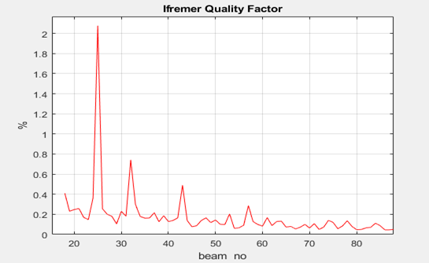
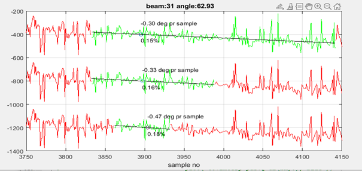
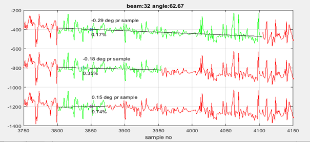
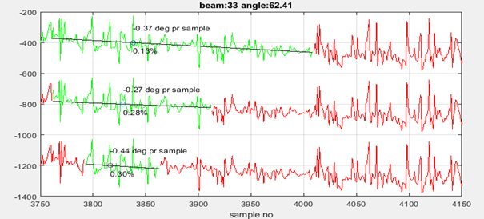
KM use linear regression (black line in the figure above) to find the split beam phase zero crossing. To achieve high resolution, we need a short phase ramp. The KM phase detection algorithm performs several successive phase detections by shortening the phase ramp by each step. The detection is shown as small circle on the black regression line.
The final detect range uncertainty in beam 31-33 varies from 0.18% to 0.78%. First detect range uncertainty varies from 0.13% to 0.17%. The uncertainty for last and final detection is used in the kmall datagram.
The expression for calculating the range uncertainty is developed by Ifremer:
// Estimated standard deviation as % of depth
Tp = effective pulse length in samples
Win = detection window in samples
r_zero = zero crossing in samples
p_slope = linear regression slope [rad/sample]
var_p = phase variance.
ns = win / Tp;
stdev = 100.0* sqrt(var_p/(p_slope*p_slope*ns) + Tp*Tp/12.0)/r_zero; // Ifremer QF
The expression has slope as a denominator. This means that small slope makes a large stdev. The goal of the p_slope part is to convert a variance in phase to a variance in range.
Uncertainty spikes are caused by low slope value or locally elevated phase variance. By investigating beams 31-33:
Reduced slope and elevated phase variance can be “connected” since a slope in the terrain will change the lineare regression slope value and incidence angle.
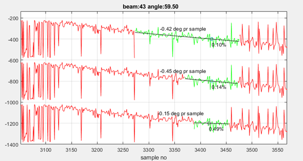
Beam 43 is also a beam with elevated QF. The phase variance in figure 3 is almost the same for the three cases, but the slope has increased by 3. At the last linear the regression slope of the linear fit has changed from 0.45 to 0.15 deg. As seen in fig.3, beam 43 has a higher uncertainty at final detection (0.49%) compared to the first detection (0.10%).
Red = QF for final detection
Blue = QF for first detection
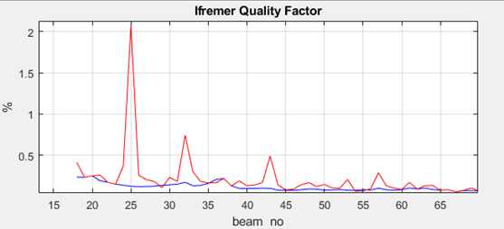
First detect QF as a function of beam angle has the expected bathtub shape, which corresponds better to the expected average depth error as a function of angle.
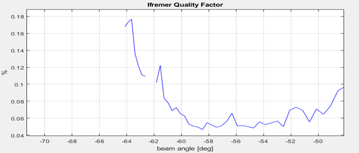
The first detect QF does not have the spikes since the regression phase slope does not vary much from one beam to another.
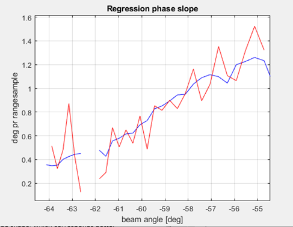
pb->phasevar = var_p / (p_slope * p_slope); /* phasevar is actually range var pb->variance = pb->rangescale * pb->rangescale * pb->phasevar; int_var = iroundf(qualityscale * sqrt( beam_p->variance ) / beam_p->range);
The old KM .all quality factor has the same spikes as seen for kmall. That is not a surprise since the expression for .all is the same as for .kmall except for the scaling.
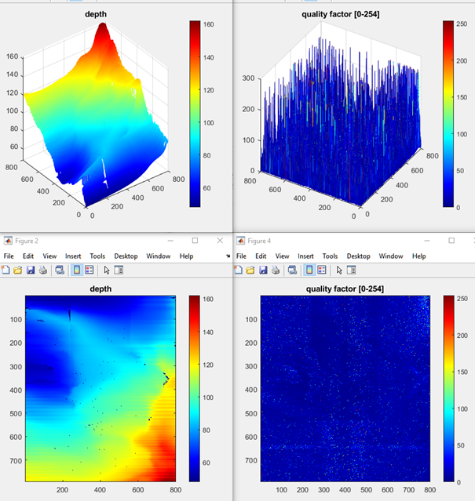
Some selected pings:
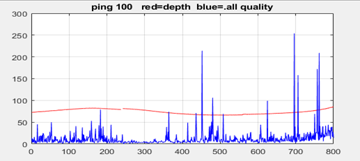
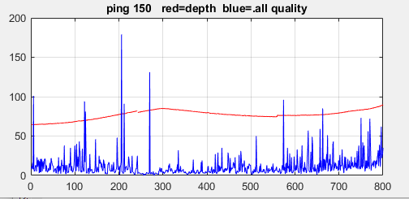
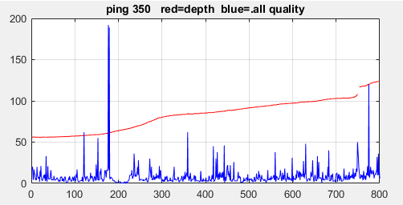
The KMall datagram has one Q-factor per sounding.
To get high resolution and individual soundings, KM uses a small area on bottom for each detection. The more soundings, the smaller is the area used.
With small area the number of samples used is low. This means that the Q-factor will vary relatively much from sounding to sounding.
This is due to the speckle effect (some areas gives a nice coherent echoes, while others may give weak and noisy returns).
For soundings without accepted detection, the Q-factor is set to zero.
In post processing the Q-factors can be median filtered for example by using a grid.
This will reduce the Q-factor noise, and then it should be possible to observe incidence angle and bottom type dependencies.
The qualityFactor can be decomposed into horizontal and vertical uncertainty for each depth. These uncertainties will then be the contribution from the EM-system to the total horizontal and vertical uncertainty estimations. The following variables are found in the #MRZ-datagram:
EMdgmMRZ_sounding_def.twoWayTravelTime_sec
EMdgmMRZ_pingInfo_def.soundSpeedAtTxDepth_mPerSec
EMdgmMRZ_sounding_def.y_reRefPoint_m
EMdgmMRZ_sounding_def.z_reRefPoint_m
EMdgmMRZ_sounding_def.qualityFactor
Then we can use these formulas to calculate horizontal and vertical uncertaintiy contributions for each depth:
| Equation | Formula |
|---|---|
| Eq. 1 | 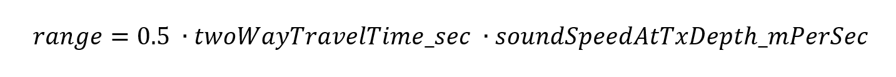 |
| Eq. 2 | 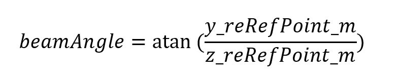 |
| Eq. 3 | 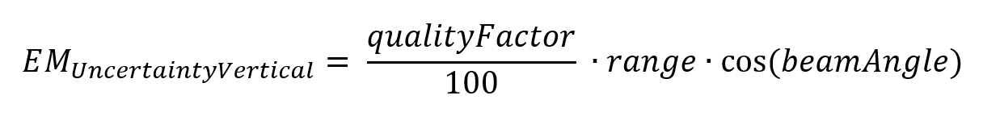 |
| Eq. 4 | 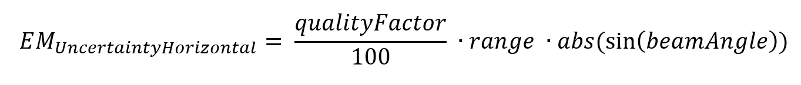 |
Eq. 3 and 4 are now the vertical and horizontal uncertainty estimate from the EM for the depth.
 1.8.17
1.8.17